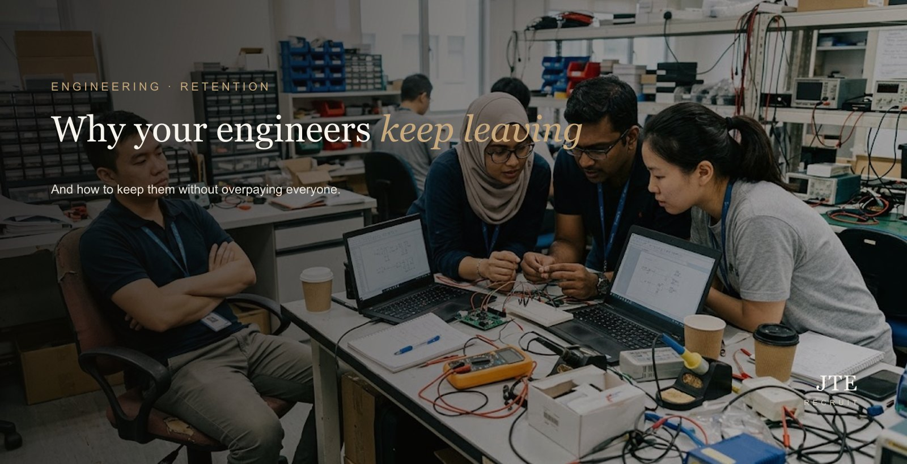
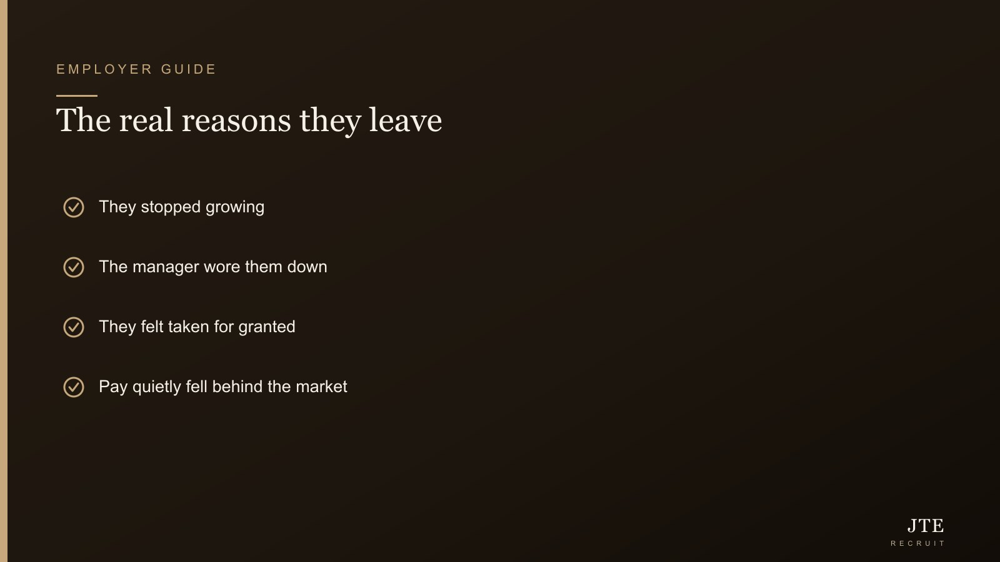

Short answer: it’s rarely just the money — even though that’s the reason they’ll write on the way out. Good engineers leave when they stop growing, when the manager slowly grinds them down, or when they quietly feel taken for granted. The good news, as an employer myself, is that keeping them doesn’t mean overpaying everybody. It means fixing the handful of things that actually make people stay. Here’s what those are — including a couple of places where I’ve had to be honest with myself and admit I dropped the ball.
If good people keep cycling out of your engineering team and you can’t quite figure out why, this one’s for you. Because the reason they give you on the way out almost never tells the full story.

Pay is the reason they write down, not the reason they leave
In an exit interview, “I got a better offer” is the safe thing to say. It’s clean, it doesn’t burn bridges, and everyone parts on good terms. So that’s the reason that goes on record — and employers, quite reasonably, conclude the problem was pay. But if you’ve ever had a good engineer leave for a package barely bigger than yours, deep down you already know: the money was the excuse, not the cause. Something else had already made up his mind well before that offer came along.
Reason 1: they stopped growing
Good engineers are wired to keep getting better at things. Give them the same work for three years — same machines, same problems, no new tech, no path to more responsibility — and they get restless, even if they like you and the pay is fine. This is the sneaky one, because on the surface nothing looks wrong. They’re just quietly bored and worn down. Then one day a recruiter calls with something that sounds fresh, and off they go — and you never saw it coming.
“The quiet, dependable one resigns and it feels like it came from nowhere. It didn’t — you just weren’t looking.”
Reason 2: the manager
The old line holds up: people don’t leave companies, they leave managers. In a smaller Singapore firm, the “manager” is often an overloaded engineering lead who never really wanted to manage — no time for a proper one-to-one, only speaks up when something breaks. That wears people down bit by bit. A good engineer can tahan (put up with) a lot — but everyone has a limit, and the day he decides he can’t tahan any longer, no last-minute raise is going to change his mind.
Reason 3: they feel taken for granted
Here’s the trap, and I’ve fallen right into it myself: your most reliable, no-drama engineer — the steady one who never makes a fuss — is exactly the one you stop paying attention to. He just gets on with it, so you assume he’s fine. No recognition, no check-in, no thanks, precisely because he never asks for any. Then one day the quiet, dependable fella resigns and you’re completely blur — caught totally off guard, like it came out of nowhere. It didn’t come out of nowhere. You just weren’t looking his way.
Reason 4: pay that quietly fell behind
Money isn’t the whole story, but it’s not nothing either — and this is the version that genuinely is about pay. The market moved, salaries for their skill crept up, and yours didn’t keep pace. Loyalty holds for a while, but every engineer eventually finds out when a peer with the same experience is earning clearly more somewhere else. Letting your good people drift below market and hoping they won’t notice is a bet you’ll lose — our breakdown of what a good engineer costs and our salary guide help you stay current before it becomes a resignation.
The warning signs, before the letter
Most resignations aren’t a bolt from the blue — the signs are usually there for weeks, if you’re watching. The engineer who used to suggest ideas goes quiet in meetings. The one who never took leave suddenly has a string of afternoon appointments. Enthusiasm dips, they do exactly what’s asked and no more, they stop putting their hand up for the hard stuff. None of these on its own means much. But together, they’re your window — the time to have a real conversation is right then, while they’re still weighing it up, not after the letter is already printed.
The fear-of-losing trap — for bosses, not just candidates
We always talk about employees being scared to lose out, but bosses have our own version, and honestly it’s the more expensive one. We hold back on spending on retention — a small raise here, a bit of training there feels like money we could just hold on to — right up until someone resigns. Then we flip into full panic mode, throwing a fat counter-offer at them to avoid losing out. Same scared-to-lose instinct, terrible timing. Spend a little of that earlier and more calmly, and you save yourself both the drama and the replacement bill down the road.
What keeping them costs — versus replacing them
A modest raise, a training budget, a slice of a manager’s time: that’s the cost of keeping a good engineer. Now weigh it against replacing one — the hiring cost, months of an empty seat, the ramp-up before the new person is fully useful, and the work that stalls in between. On pure numbers, retention wins almost every time, never mind the hit to morale for everyone left carrying the extra load. If you make just one change after reading this, make it this: do the comparison honestly, on paper, before you decide someone isn’t worth keeping.
How to keep them without overpaying everyone
You don’t need to spray money across the whole team. Be targeted. Know who your genuinely strong people are and make sure their pay is fair to the market — fair, not top. Give them something to grow into. Fix the manager problem, or at least carve out space for real one-to-ones. And do stay interviews — sit down with your good people before they resign, ask what would make them stay and what’s quietly frustrating them, while you can still act on it. It’s the cheapest retention tool there is, and almost nobody bothers to use it. And when someone does hand in that letter, our honest take on whether to counter-offer will save you from an expensive reflex.
Frequently asked questions
Why do engineers leave their jobs?
Usually growth, management or recognition — not pay alone, though pay is the reason most people give on the way out. If someone’s doing the same work with no path, under a manager they don’t rate, and feeling unappreciated, a pay rise by itself won’t hold them.
How do I retain engineers without overpaying?
Target the real drivers: a visible growth path, a manager worth staying for, genuine recognition, and pay that’s fair to the market (not top of it). You don’t need to overpay everyone — you need to stop underpaying and under-developing your best people.
Do engineers really leave for money?
Sometimes, but less often than employers assume. Money is the easy, non-awkward reason to give in an exit interview. The deeper drivers are usually growth, management and feeling valued — which is why simply matching a salary offer often doesn’t keep someone.
How much does it cost to replace an engineer?
Often a multiple of the salary once you count the hiring cost, lost productivity, ramp-up time and the work that stalls while the seat is empty. That’s exactly why retaining a good one is almost always cheaper — see our breakdown of what a good engineer costs.
What’s the biggest reason good engineers quit?
Feeling stuck: no growth, no recognition, or a manager who grinds them down. Reliable, low-drama people are especially at risk, because employers stop paying them attention precisely because they never complain.
What are the warning signs an engineer is about to resign?
Usually a cluster of small changes: going quiet in meetings, doing exactly what’s asked and no more, no longer volunteering for hard work, and a sudden run of leave or appointments. Any one alone means little; together they’re your cue to have a real conversation before the letter arrives.
If you keep losing good engineers and can’t figure out why — or you’d rather build a team people don’t want to leave in the first place — that’s a conversation worth having with people who see the whole market. Talk to us, and we’ll be straight with you about what’s really going on. More on how we hire and structure engineering teams at JTE engineering recruitment.